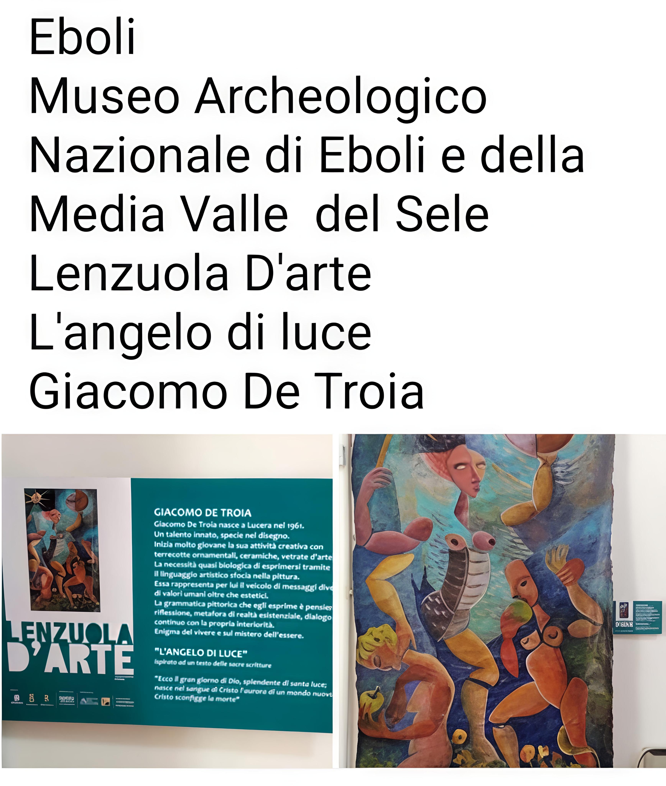
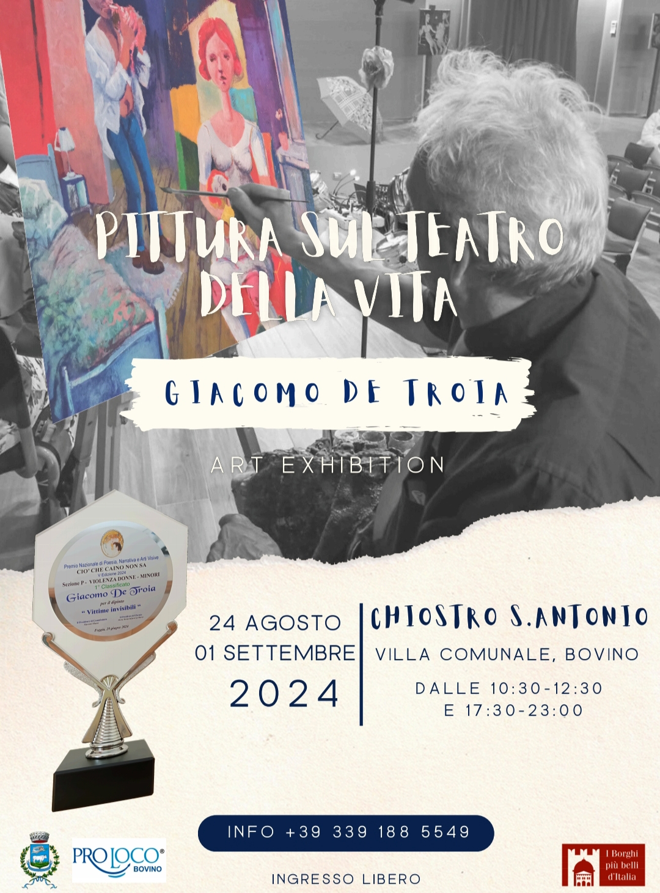
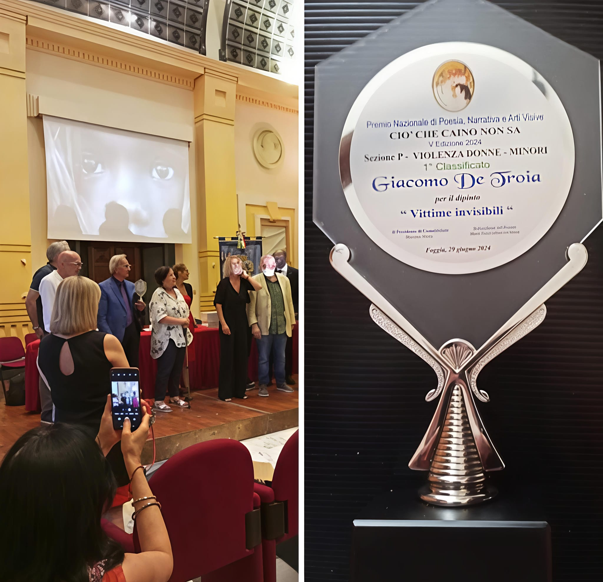

Giacomo De Troia
Mostre e Premi
Esposizioni e Riconoscimenti
Riconoscimenti
Premi e Riconoscimenti
1° Classificato
Biennale d'Arte CIAO Umbria — Città di Castello
Premio alla Carriera
Lucera
Premio della Presidenza
Foggia
1° Classificato
Premio Nazionale “Ciò Che Caino Non Sa” V Edizione — Violenza Donne e Minori
Opera: Vittime Invisibili — Foggia
“Pennello d’Oro”
Rassegna Iconovetere “Anghioni Mare Nostrum” — Foggia
1° Classificato
Concorso V. Pecorello — Montefalcchio
Esposizioni
Mostre

Museo Archeologico Nazionale di Eboli
Opera esposta: L’Angelo di Luce

Chiostro S. Antonio, Villa Comunale — Bovino
Una selezione di opere che esplorano la drammaticità e la bellezza dell’esperienza umana, esposte nel suggestivo chiostro storico di Bovino.
Altre Esposizioni in Italia
Ancona
Esposizione nazionale
Milano — Palazzo di Brera
Esposizione nazionale
Bari
Esposizione regionale
Lucera
Esposizioni locali e regionali
Alghero
Esposizione nazionale
Catania
Esposizione nazionale
San Severo
Esposizione provinciale
Foggia
Esposizioni provinciali e regionali
Puglia
Mostre itineranti regionali
Immagini
Dai Luoghi dell'Arte


Le Opere
Scopri le Opere Premiate
Esplora il catalogo completo delle opere di Giacomo De Troia, incluse quelle che hanno ricevuto riconoscimenti nazionali e internazionali.
Sfoglia le Opere →G. De Troia